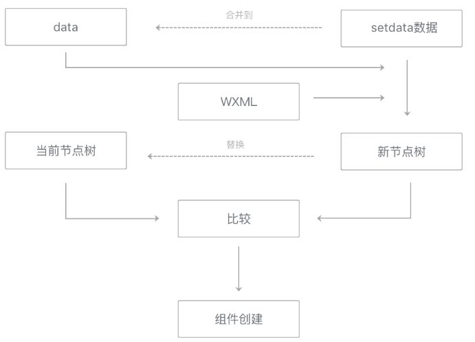

初始渲染完毕后，视图层可以多次应用setData的数据。每次应用setData数据时，都会执行重渲染来更新界面。
初始渲染中得到的 data 和当前节点树 会保留下来用于重渲染。每次重渲染时，将data和setData数据套用在WXML片段上，得到一个新节点树。
然后将新节点树与当前节点树进行比较，这样可以得到哪些节点的哪些属性需要更新、哪些节点需要添加或移除。
最后，将setData数据合并到data中，并用新节点树替换旧节点树，用于下一次重渲染。

图7-8 视图层重渲染流程图
在进行当前节点树与新节点树的比较时，会着重比较setData数据影响到的节点属性。因而，去掉不必要设置的数据、减少setData的数据量也有助于提升这一个步骤的性能。
最后一次编辑于 2019年08月19日 （未经腾讯允许，不得转载）